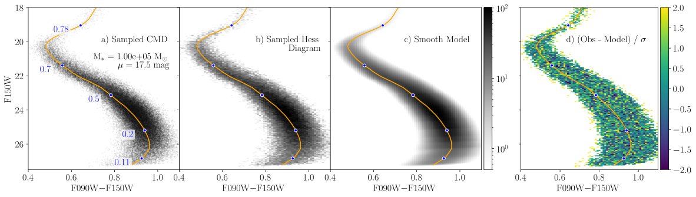

Binary Systems
Here we review the API for including binary systems in our population models. Both our Monte Carlo sampling methods and our smooth template modelling procedure support all three models. A comparison between a Monte Carlo population and a smooth template model for a RandomBinaryPairs model with binary fraction of 70% is shown below. The redward shift of the lower main sequence typical of populations with high binary fractions is clearly evident and robustly modelled.

Types
StarFormationHistories.AbstractBinaryModel — Type
StarFormationHistories.AbstractBinaryModel is the abstract supertype for all types that are used to model multi-star systems in the package. All concrete subtypes should implement the following methods to support all features:
StarFormationHistories.sample_systemStarFormationHistories.binary_system_fractionStarFormationHistories.binary_mass_fractionStarFormationHistories.binary_systems, used to construct smooth Hess diagram templatesStarFormationHistories.with_fraction, used to construct Hess diagram templates with a variable binary fraction (e.g., when fitting the binary fraction withSSPModel)Base.length, which should return an integer indicating the number of stars per system that can be sampled by the model; this is equivalent to the length of the mass vector returned bysample_system.
Note that all quantities relating to binary populations (e.g., binary_system_fraction) should be defined for the population at birth. As the stars in a binary system evolve, the more massive star may die before the system is observed at present-day. Of course, the stars in single-star systems can also die. If the rate at which binary systems become single-star systems is not equal to the rate at which single-star systems die, then there can be net transfer between these populations over time. Therefore the observed, present-day binary system fraction of an evolved population is not necessarily equal to the fraction at birth, which is the more fundamental quantity.
StarFormationHistories.NoBinaries — Type
NoBinaries()The NoBinaries type indicates that no binaries of any kind should be created.
StarFormationHistories.RandomBinaryPairs — Type
RandomBinaryPairs(fraction::Real)The RandomBinaryPairs type takes one argument 0 <= fraction::Real <= 1 that denotes the number fraction of stellar systems that are binaries (e.g., 0.3 for 30% binary fraction) and will sample binaries as random pairs of two stars drawn from the same single-star IMF. This model will ONLY generate up to one additional star – it will not generate any 3+ star systems. This model typically incurs a 10–20% speed penalty relative to NoBinaries.
StarFormationHistories.BinaryMassRatio — Type
BinaryMassRatio(fraction::Real,
qdist::Distributions.ContinuousUnivariateDistribution =
Distributions.Uniform(0.1, 1.0))The BinaryMassRatio type takes two arguments; the number fraction of stellar systems that are binaries 0 <= fraction::Real <= 1 and a continuous univariate distribution qdist from which to sample binary mass ratios, defined as the ratio of the secondary mass to the primary mass: $q = \text{M}_S / \text{M}_P$. The provided qdist must have the proper support of (minimum(qdist) >= 0) & (maximum(qdist) <= 1). Users may find the Distributions.truncated method useful for enforcing this support on more general distributions. The default qdist is a uniform distribution from 0.1 to 1 with the floating-point type of fraction, which appears to give reasonably good agreement to observations (see, e.g., [16]).
Methods
StarFormationHistories.binary_system_fraction — Function
binary_system_fraction(model::T) where T <: AbstractBinaryModelReturns the number fraction of stellar systems that are binaries for the given concrete subtype T <: AbstractBinaryModel. Has a default implementation of binary_system_fraction(model::AbstractBinaryModel) = model.fraction.
StarFormationHistories.binary_number_fraction — Function
binary_number_fraction(model::T) where T <: AbstractBinaryModelReturns the number fraction of stars that in binary pairs for the given concrete subtype T <: AbstractBinaryModel. Has a default implementation of 2b / (1+b), where b is the result of StarFormationHistories.binary_system_fraction.
StarFormationHistories.binary_mass_fraction — Function
binary_mass_fraction(model::T, imf) where T <: AbstractBinaryModelReturns the fraction of stellar mass in binary systems for the given concrete subtype T <: AbstractBinaryModel and initial mass function imf. imf must be a properly normalized probability distribution such that the number fraction of stars/systems between mass m1 and m2 is given by the integral of dispatch_imf(imf, x) from m1 to m2.
binary_mass_fraction(m::RandomBinaryPairs, imf)The RandomBinaryPairs model uses a single-star imf. If a system is chosen to be a binary pair, two stars are drawn from the single-star imf and the more massive star is made the primary. Given this model, it can be shown that the expectation value for the mass of a binary system is twice the expectation value for single star systems:
\[2\int_{\text{M}_\text{min}}^{\text{M}_\text{max}} \text{M} \frac{d\text{N} \left( \text{M} \right)}{d\text{M}} d\text{M} = \int_{\text{M}_\text{min}}^{\text{M}_\text{max}} \int_{\text{M}_\text{min}}^{\text{M}_\text{max}} \left( \text{M}_P + \text{M}_S \right) \frac{d\text{N} \left( \text{M}_S \right)}{d\text{M}} \frac{d\text{N} \left( \text{M}_P \right)}{d\text{M}} d\text{M}_S \, d\text{M}_P\]
for primary mass $\text{M}_P$, secondary mass $\text{M}_S$, and single-star IMF $d\text{N} / d\text{M}$. As such, the fraction of total stellar mass in binaries is equal to the number fraction of all stars in binary pairs, which is given by StarFormationHistories.binary_number_fraction.
binary_mass_fraction(m::BinaryMassRatio, imf)This binary model requires an imf that is defined by stellar system mass. If a system with a randomly sampled mass $M$ is is a binary, the primary and secondary mass are determined based on a binary mass ratio $q$ sampled from a user-defined distribution. By definition, the expectation value for the total mass of a binary system is equal to the expectation value for single-star systems. In this case the binary mass fraction is equal the binary system number fraction as given by StarFormationHistories.binary_system_fraction.
StarFormationHistories.sample_system — Function
masses = sample_system(imf, rng::AbstractRNG, binarymodel::StarFormationHistories.AbstractBinaryModel)Simulates the effects of non-interacting, unresolved stellar companions on stellar photometry. Implementation depends on the choice of binarymodel.
Arguments
imf: an object implementingrand(imf)to draw a random mass for a single star or a stellar system (depends on choice ofbinarymodel)rng::AbstractRNG: the random number generator to use when sampling starsbinarymodel::StarFormationHistories.AbstractBinaryModel: an instance of a binary model that determines which implementation will be used; currently provided options areNoBinaries,RandomBinaryPairs, andBinaryMassRatio.
Returns
masses::SVector{N,eltype(imf)}: the masses of the individual stars sampled in the system in descending order whereNis the maximum number of stars that can be sampled by the providedbinarymodelas given byBase.length(binarymodel).
StarFormationHistories.binary_systems — Function
(m1, m2, w) = binary_systems(model::StarFormationHistories.AbstractBinaryModel, m::AbstractVector{<:Number}, imf; mean_mass::Number=mean(imf))Returns a quadrature over the binary systems of model, used to construct smooth Hess diagram templates with partial_cmd_smooth; this is the deterministic counterpart of StarFormationHistories.sample_system. m is a sorted vector of initial masses spanning the stars present in the isochrone. Node k is a binary system whose stars have initial masses m1[k] >= m2[k]; stars with initial masses outside extrema(m) are not in the isochrone (e.g., they have died) and contribute no light. w[k] is the expected number of binary systems represented by node k per unit stellar mass formed. The nodes cover every binary system with at least one star in the isochrone. imf and mean_mass are as in partial_cmd_smooth.
Single-star systems are modeled separately, so concrete subtypes of AbstractBinaryModel only need to implement this method (along with StarFormationHistories.binary_mass_fraction) to support smooth Hess diagram templates.
StarFormationHistories.with_fraction — Function
with_fraction(model::AbstractBinaryModel, fraction::Real)Returns a copy of model with its binary system fraction (see StarFormationHistories.binary_system_fraction) set to fraction, keeping any other properties of model.
Notes
Smooth templates with binaries are constructed from a quadrature over the binary systems of the chosen model, as returned by StarFormationHistories.binary_systems. Each node of the quadrature is a binary system with stars of initial masses $M_1 \geq M_2$ and a weight $w$ giving the expected number of such systems per unit stellar mass formed. Stars with initial masses outside the range of the isochrone (e.g., stars that have died) contribute no light, so binary systems in which only one star remains appear at the position of that star in the Hess diagram. The magnitudes of each system are computed from the summed flux of its stars, after which completeness and photometric bias are applied at the system magnitudes as for single stars. The systems are then aggregated in cells half the width of the Hess diagram bins, and each cell is represented by a single smoothing kernel placed at the weighted mean position of its systems, with photometric errors evaluated at the weighted mean intrinsic magnitudes of its systems. Single-star systems are modelled as for populations without binaries and contribute a fraction $1 - f_M$ of the template, where $f_M$ is given by StarFormationHistories.binary_mass_fraction.
For the RandomBinaryPairs model with binary system fraction $b$, both stars are drawn from the single-star IMF $dN(M)/dM$ with mean mass $\langle M \rangle$, so that the number of binary systems per unit stellar mass formed is $b / \left[ (1 + b) \langle M \rangle \right]$. With $a_i$ being the IMF probability represented by isochrone mass $M_i$ under the trapezoidal rule, the system with masses $M_i \geq M_j$ has weight
\[ w_{i,j} = \frac{b}{(1 + b) \langle M \rangle} \, a_i \, a_j \times \begin{cases} 1 & i = j \\ 2 & i \neq j \end{cases}\]
where the factor of 2 counts both orderings of the two independently drawn stars. Systems in which one star has a mass outside the range of the isochrone are included with weight $2 \, b \, a_i \left( 1 - \sum_j a_j \right) / \left[ (1 + b) \langle M \rangle \right]$.
For the BinaryMassRatio model, the IMF $dN(M)/dM$ is the distribution of system masses $M = M_1 + M_2$, and the mass ratio $q = M_2 / M_1$ follows the distribution $dN(q)/dq$. The number of binary systems per unit stellar mass formed is $b / \langle M \rangle$, and the quadrature covers $q$ with equal-width cells of probability $p_l$ together with the isochrone masses. For systems whose primary is in the isochrone, the system with primary mass $M_{1,i}$ and mass ratio $q_l$ has weight
\[ w_{i,l} = \frac{b}{\langle M \rangle} \, \Delta M_i \, p_l \, (1 + q_l) \, \frac{dN}{dM}\left( M_{1,i} (1 + q_l) \right)\]
with $\Delta M_i$ the trapezoidal rule weight of $M_{1,i}$, while systems whose primary is more massive than the isochrone and whose secondary is in it are included through the analogous change of variables in the secondary mass, $M = M_2 (1 + q) / q$.